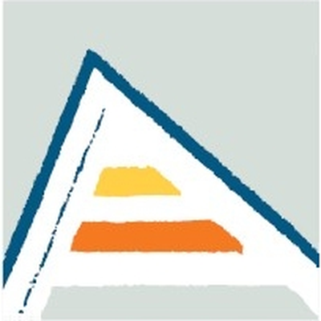
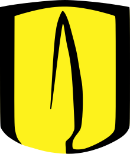

Curriculum Vitae
Download the full CV as PDF
Research Interests
Economics of Education, Labour Economics, Development Economics
Education
-

PhD student in EconomicsUniversity of AlicanteAlicante, Spain2025 – present -
MSc in Quantitative EconomicsUniversity of AlicanteAlicante, Spain
- Final thesis: 10/10 (honor roll) [Abstract]
2024 – 2025 -
 MRes in Economic AnalysisCarlos III University of MadridMadrid, Spain
MRes in Economic AnalysisCarlos III University of MadridMadrid, Spain- Final thesis: 9/10 [Full text]
2022 – 2024 -

BSc in EconomicsLos Andes UniversityBogotá, Colombia- GPA: 4.66/5 or 9.1/10 (cum laude)
- Minor in Public Policy [2019–2021]
2018 – 2021
Work Experience
-
Organisation for Economic Co-operation and Development (OECD)Directorate for Education and SkillsParis, France
- Research on teacher attrition, retention and the policies that help bring former teachers back into the classroom. Part of the Unlocking the potential of diverse teaching profiles project.
Jul 2026 – present -
Inter-American Development Bank (IDB)Short Term ConsultantBogotá, Colombia
- Impact evaluation of the Programmatic Policy Based Loan (PBP) CO-L1252 that sought to improve the social, productive, and educational inclusion of people with disabilities in Colombia.
Summer 2022 -
Fedesarrollo – Center for Economic and Social ResearchJunior EconomistBogotá, Colombia
- Analysis of microdata from national surveys (ENUT 2016–2020, SABE 2015, ECV 2020) to examine pensions, healthcare, caregiving, and economic security for the elderly population in Colombia.
Dec 2021 – Jul 2022
Teaching Experience
Teaching Assistant
-
University of Alicante
- Introduction to Macroeconomics [Julio Carmona]Spring 2025 & 2026
2025 – 2026 -
Carlos III University of Madrid
-
Monetary and Financial Macroeconomics [Prof. Hernan Seoane]
Award for excellence in Teaching
Spring 2024
2023 – 2024
- Principles of Economics Teaching in English / Award for excellence in Teaching Economics [Prof. Angel Veciana] | Finance and Accounting [Prof. Antonio Romero] Fall 2023
-
Monetary and Financial Macroeconomics [Prof. Hernan Seoane]
Award for excellence in Teaching
Spring 2024
Undergraduate Teaching Assistant
-
Los Andes University
- Econometrics II [Prof. Jorge Bonilla]Fall 2021
- International Development [Prof. Philipp Hessel]Spring 2021
- History of Economic Thought [Prof. Andrés Sierra]Spring 2021
- World Economic History [Prof. Leopoldo Fergusson | Prof. Juan Galán]Fall 2020
- Introduction to Public Policies [Prof. Philipp Hessel]Fall 2020
2020 – 2021
Publications
- ArticleThe Hidden Demand for AI Inside Your Company with Alfaro, E., Cabrales, A., Garicano, L., Roldán Monés, T. and Vieira de Santiago, G. (2026). Harvard Business Review. Read at HBR.org 2026
- Book chapterOlder people and caregivers on “Misión Colombia Envejece” with Hessel, P. (2023). Fundación Saldarriaga Concha (FSC). Complete document (Spanish) / Executive summary (English) 2023
Work in Progress
- A matter of time? Academic performance and school timetables (with José Montalbán and Martín Fernández)
- Boost your grades watching videos? Lecture capture impact on academic performance
- Human-in-the-loop: bottom up innovation with GenAI in a global bank (with Antonio Cabrales, Luis Garicano and Toni Roldán-Monés)
Seminars and Presentations
- Upcoming51st Simposio de la Asociación Española de Economía (SAEe) Universidad de Las Palmas de Gran Canaria, Las Palmas de Gran Canaria, 16–18 December 2026Dec 2026
- SAEe PhD school (Universidad Autónoma de Barcelona)2025
Honors, Awards and Fellowships
- Fundación Ramón Areces Scholarship (full funding) for the PhD thesis2024 – present
- Economics Department’s Scholarship for the Master in Economic Analysis in UC3M2022 – 2024
- Degree in Economics with Cum Laude Distinction GPA in the top 3% of the 5 previous years cohorts2022
- Award for excellence in Colombia’s Higher Education Quality Exam “Saber Pro”2021
- Winner of the XVIII National Economics and Finance - Public Policy contest Organized by the Colombian Central Bank & Universidad del Rosario2021
Computer Skills
StStata
 R
R
 Julia
Julia
 Python
Python
 Matlab (Beginner)
EVEViews
SQL
MS Office
Matlab (Beginner)
EVEViews
SQL
MS Office
 LaTeX
LaTeX
R
Julia
Python
Matlab (Beginner)
EVEViews
SQL
MS Office
LaTeX
Language Competence
Spanish (Native) · English (Fluent)
English certifications: TOEFL iBT 105/120 pts
Academic References
Antonio Cabrales
Full Professor and Research Chair in Economics
José Montalbán Castilla
Assistant Professor in Economics